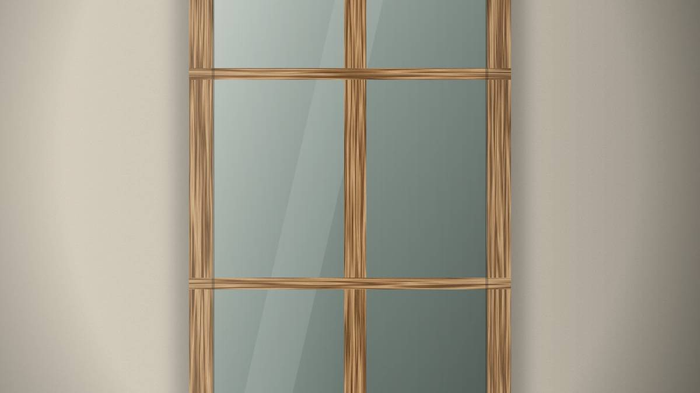
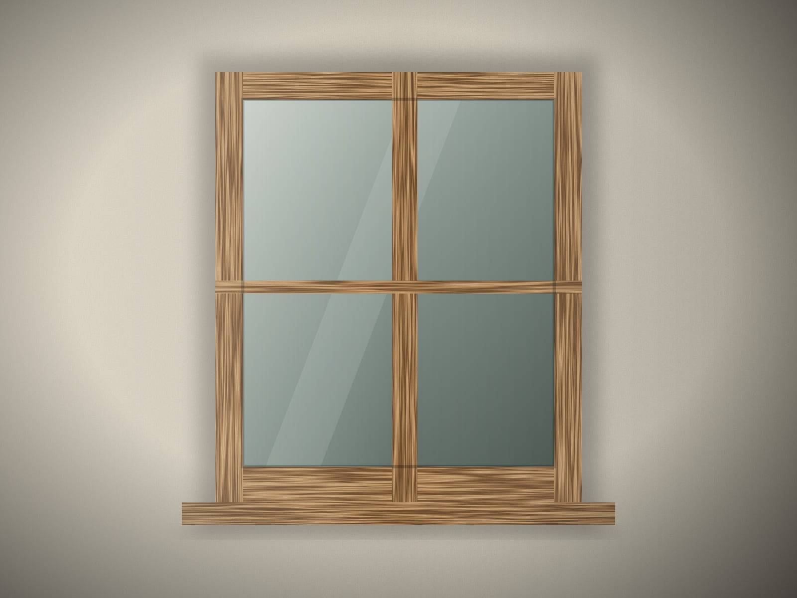
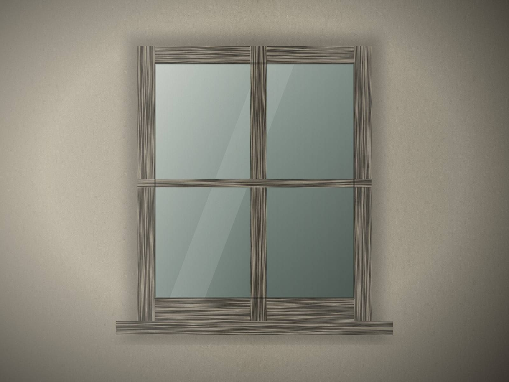

Restaurierung · Wohnhaus
Ein altes Haus, lebendig erhalten
Fenster und eine Haustür für ein traditionelles Familienhaus — repariert, wo möglich, neu gebaut, wo nötig.

- Projektart
- Restaurierung · Wohnhaus
- Materialien
- Eiche und Lärche
- Öl- und Farboberflächen
Das Projekt
Die Besitzer wollten im Haus leben, nicht in einem Museum. Aber sie wollten auch nicht verlieren, was es zu ihrem Haus machte.
Also haben wir die Originalfenster erhalten, wo das Holz es zuliess, den Rest in derselben Sprache neu gebaut und eine passende Haustür gefertigt.
Die Aufgabe
Fenster unterschiedlichen Alters und Zustands — und der Wunsch nach mehr Komfort, ohne das Gesicht des Hauses zu verändern.
Unser Vorgehen
Zuerst reparieren, dann nachbauen — jeder Entscheid mit der Familie besprochen und abgestimmt.
Vorher und nachher


Bilder

Bild 1 von 2